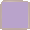
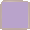
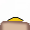
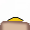
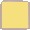
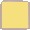

Quand j’ai commencé mon programme, j’ai beaucoup travaillé avec techwithtim.net pour apprendre les bases de pygame. Son tutoriel consiste en la programmation d’un petit jeu avec des étapes différentes comme „basic movements“, „jumping & boundaries“ ou „hit boxes“. Dans ce tutoriel il utilise des „classes“, un concept que je ne connaissais pas encore.. Sur unpeud.info j’ai trouvé une page qui en explique les bases et j’ai cherché sur internet comment utiliser ces „classes“. Au lieu de tout écrire dans un fichier comme je l’avais fait au début, j’en ai créé plusieurs et j’ai commencé à programmer de façon orienté objet.
Au début j'ai eu beaucoup de mal à garder le style de la programmation orientée objet et j'ai souvent dû changer mon code et le restructurer. J'ai mis du temps à m’y habituer, mais peu à peu, j'ai commencé à comprendre les grands avantages de ce style de programmation. Par exemple vers la fin du projet, j’ai décidé de rajouter des bassins bleus qui ne sont pas mortels du tout et cela ne m’a presque pas coûté de travail grâce à cette façon de programmer.
Ci-dessous un diagramme UML pour expliquer le lien de parenté entre les objets différents. Une classe peut avoir des sous-classes qui peut encore avoir des sous-classes. Et chaque classe hérite toutes les propriétés de sa classe parent.

Mon professeur monsieur Kientz m’a posé
la question comment je voulais faire afficher mon plan de jeu.
Il m’a ensuite expliqué la méthode la plus simple: pour chaque
niveau, il existe un fichier texte dans lequel les éléments du
plan de jeu sont représentés par des symboles. La fenêtre a une
taille de 900x600 unités. J’ai donc fixé la taille d’un bloc à
30x30 unités, mon plan de jeu est constitué de 30x20 blocs.
La fonction „init“ de la classe „Level“ lit le fichier texte
correspondant au niveau et génère le bloc correspondant au
symbole dans le fichier.
Voici les symboles et les blocs correspondants:


 
 
 



Pour tester la collision entre 2 éléments donnés, j’ai trouvé assez rapidement comment faire. Ce qui était plus compliqué était de trouver comment tester à chaque moment s’il y a une collision entre un joueur et un ou plusieurs blocs du plan de jeu. J’ai des listes qui contiennent tous les blocs que j'utilise pour „dessiner“ les blocs. Dans la fonction qui fait bouger les joueurs, je teste s’il y a collision avec le joueur donné en utilisant les mêmes listes.
Dans beaucoup de tutoriels et de sites avec des extraits de code python, j’ai remarqué des commentaires non pas avec des croisillons comme je le connaissais, mais entre """. Quand j’ai cherché sur internet de quoi il s’agit, j’ai découvert que c’était une façon standard structurée de commenter son code python: pydoc. Puisque je trouve que cette façon de commenter qui décrit aussi par example le type et la signification d’un paramètre, donne plus de structure et de clarté à mon code, j’ai décidé de l'utiliser.
Quand j’ai commencé avec le site web, j’ai décidé de le construire de façon simple, logique et lisible pour le lecteur. De plus, je voulais le rendre attractif pour les utilisateurs du programme: les enfants. Après quelques difficultés au début, parce que je n’avais plus utilisé HTML5 et CSS depuis quelque temps, le site n’a pas posé de grands problèmes comme le programme en Python.